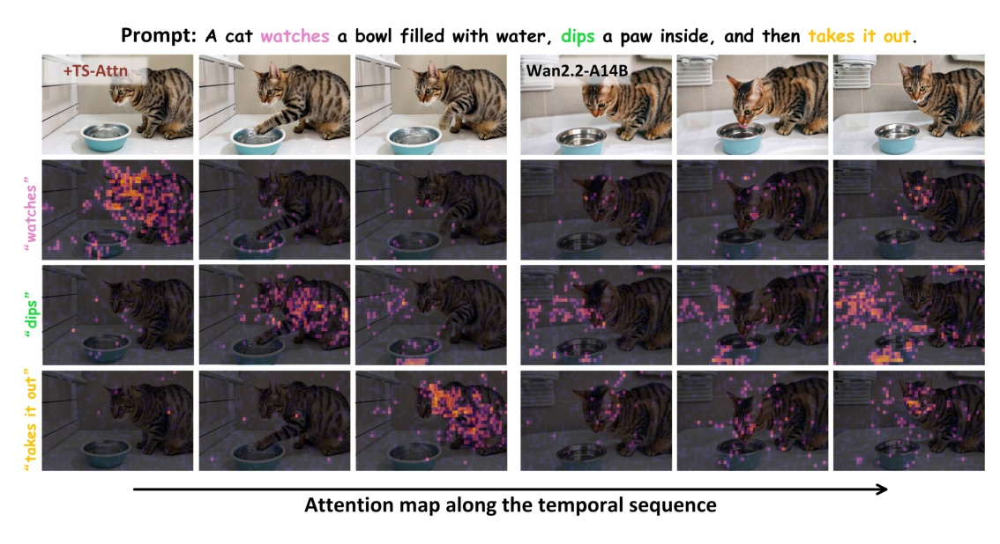
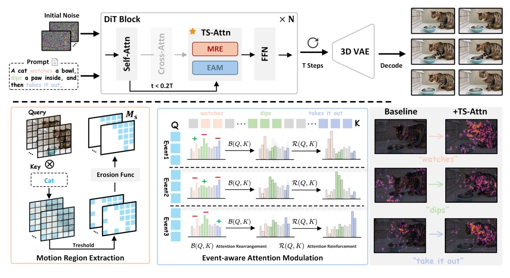
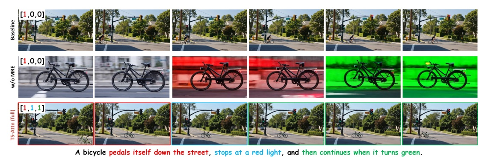
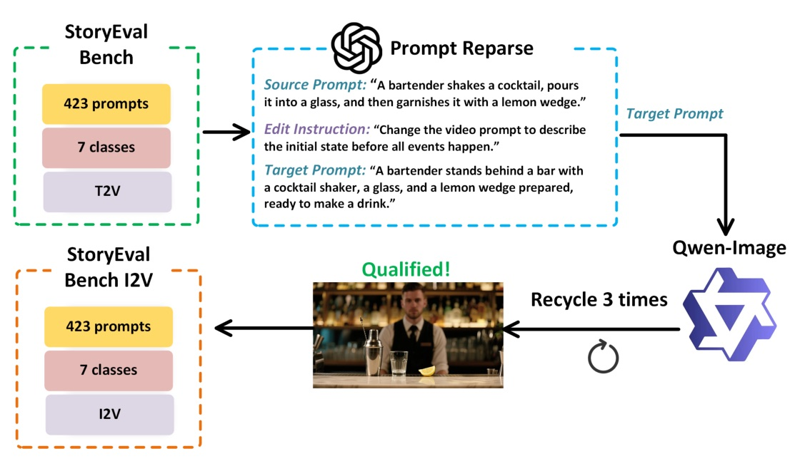
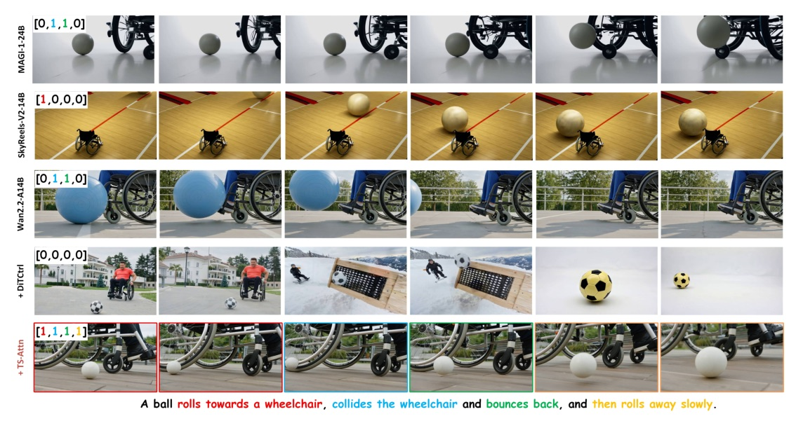
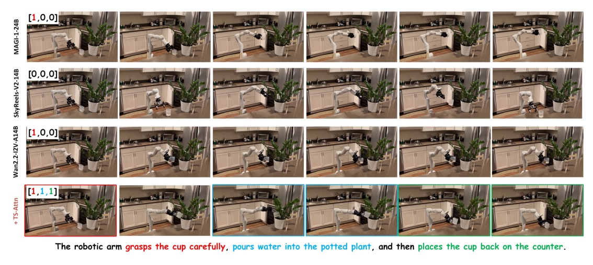

把多事件影片生成的問題，收斂成 cross-attention 的時間分離：每段 motion region 看自己的 event，不再互相搶注意力。
TS-Attn 不是再訓練影片模型，而是在推論時重排 cross-attention。

每個 frame 的 motion region 應主要看「同時間」event。


對 ei 加 b+；對 ej, i != j 加 b-；prompt context 不加 bias。
| Setting | Baseline | +TS-Attn | Delta |
|---|---|---|---|
| Wan2.2-A14B | 48.3% | 56.2% | +7.9 pts / +16.4% rel |
| Wan2.1-14B | 37.6% | 50.2% | +12.6 pts / +33.5% rel |
| CogVideoX-5B | 16.4% | 25.8% | +9.4 pts / +57.3% rel |
| DiTCtrl + Wan2.2 | 46.5% | 56.2% | TS-Attn higher |
StoryEval-Bench 含 423 prompts、七類、每 prompt 2-4 events；此表使用 GPT-4o verifier。
| Setting | Base | +TS |
|---|---|---|
| Wan2.2-I2V-A14B | 47.5% | 54.4% |
| Wan2.1-I2V-14B | 37.0% | 42.6% |
| CogVideoX-I2V-5B | 19.6% | 28.3% |

I2V benchmark 繼承 StoryEval-Bench 的 423 prompts 與評估流程。
| Model | Latency | Comment |
|---|---|---|
| Wan2.2-A14B | 846s | single prompt, 81 frames |
| +TS-Attn | 863s | +17s, approx 2%; includes 2.65s GPT-4o-mini segmentation |
| +MEVG | 2453s | multi-prompt approx 81 x n frames |
| +DiTCtrl | 2749s | multi-prompt |
| MAGI-1-24B | 2732s | large baseline |
| Method | Wan2.2 avg | Wan2.1 avg | CogVideoX avg |
|---|---|---|---|
| Baseline | 48.3% | 37.6% | 16.4% |
| +EAM | 51.9% | 46.4% | 22.9% |
| +EAM & MRE / TS-Attn | 56.2% | 50.2% | 25.8% |
真正有用的是 temporal rearrangement，不是單純 event-token 放大。
| Method | Wan2.2 avg | CogVideoX avg | Interpretation |
|---|---|---|---|
| w/o Attention Rearrangement | 49.4% | 18.8% | 只剩 event attention enhancement，沒有 temporal correspondence |
| w/o Attention Reinforcement | 53.5% | 23.6% | rearrangement 還在，效果較完整 |
| TS-Attn | 56.2% | 25.8% | both modules best |
| Segmentation | Wan2.2 avg | CogVideoX avg |
|---|---|---|
| Uniform | 55.3% | 25.2% |
| User Input | 56.8% | 26.5% |
| GPT-4o-mini Plan | 56.2% | 25.8% |

作者強調 ball / wheelchair 等 cases 中的 rolling、collision、subsequent movement 能維持順序與轉場。

Existing methods are constrained by an inherent trade-off: using multiple short prompts fed sequentially into the model improves action fidelity but compromises temporal consistency, while a single complex prompt preserves consistency at the cost of prompt-following capability.
既有方法卡在 trade-off：多段短 prompt 保動作但破壞時間一致性；單一複雜 prompt 保全局一致性但犧牲 prompt following。Abstract pp.1-2
Motion-related regions in each frame should focus primarily on the event that occurs at the same time, and interactions across different events in the temporal dimension should be minimized.
每一 frame 的 motion region 應該主要看同時間 event，不同 event 在時間維度上的干擾要最小化。§1 p.2
Removing attention rearrangement leads to a significant performance drop... Relying solely on attention reinforcement reduces TS-Attn to a mere attention enhancement mechanism for event tokens, lacking temporal correspondence.
移除 attention rearrangement 會讓表現大幅下降；只靠 reinforcement 只是把 event token 注意力放大，缺少真正的時間對應。Appendix D p.15
多事件影片生成的控制點，可能不在更多訓練資料，而是在正確時間、正確 motion region 的 attention routing。